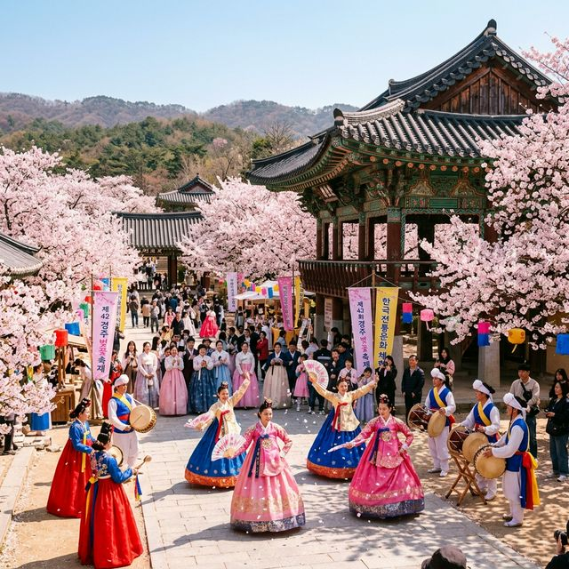
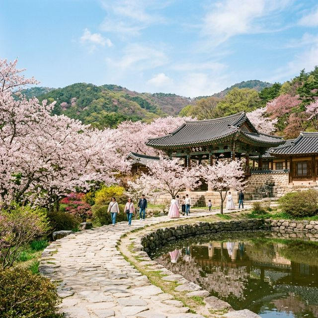
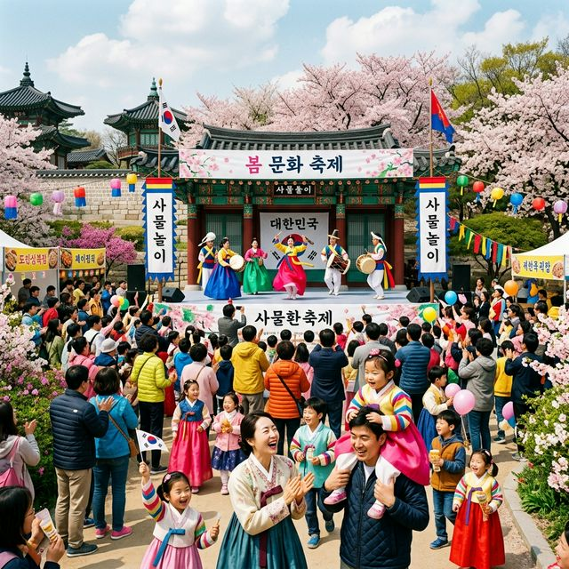

영암 왕인문화축제가 기존과 달라진 핵심은 기간이 대폭 확장(9일)되었다는 점입니다. 과거 4~5일 행사에서 거의 1.5배 늘어난 이 기간 동안, 단순한 벚꽃 구경을 넘어 학술·공연·체험·음식이 하나로 어우러진 복합 문화 축제로 진화했습니다.
특히 이번 축제의 가장 큰 화제는 9일간 매일 이어지는 '인문학 항해 토크 콘서트'입니다. 임영신 작가(4/4), 이정모 교수(4/5), 소설가 정지아(4/6), 정석 교수(4/7), 강원국 교수(4/8), 그리고 개그우먼 김영희(말자할매, 4/9) 등 각계각층의 저명한 연사들이 릴레이로 왕인박사의 역사적 의미를 현대적 시각으로 풀어냅니다. 단순히 꽃만 보러 오는 것이 아니라, 깊이 있는 인문학적 지식을 채워갈 수 있다는 점에서 기존 봄꽃 축제들과 확실히 차별화됩니다.
축제의 개막을 알리는 4월 4일(토)은 사실상 하이라이트가 가장 집중된 날입니다. 오전에는 활짝 핀 벚꽃길을 달리는 마라톤 대회가 상대포 일대를 뜨겁게 달궈놓고, 해가 지면 전통 불꽃놀이인 '낙화놀이(落花놀이)'가 밤하늘을 수놓습니다. 낙화놀이는 삼베나 뽕나무로 만든 큰 불 뭉치를 줄에 매달아 태우는 전통 불꽃 놀이로, 불씨 조각들이 마치 봄꽃이 떨어지듯 이슬비처럼 흩어지는 모습이 장관입니다.
낙화놀이에 이어지는 공연 라인업도 심상치 않습니다. 감성 인디 밴드 '브로콜리너마저'와 한국 전통 판소리와 현대 음악의 경계를 허무는 독보적 아티스트 '안예은'의 공연이 상대포 야외 공연장에서 펼쳐집니다. 왕벚꽃이 만개한 밤하늘 아래서 듣는 이들의 음악은 단순한 봄 나들이를 완전히 다른 차원의 경험으로 격상시켜줄 것이 분명합니다.

9일간의 대장정이 막바지에 이르는 4월 11일~12일, 영암군은 올해 축제 최대 스펙터클을 선보입니다. 바로 역사적 고증을 바탕으로 화려하게 재현되는 '조선통신사 대행렬'과 옛 항구 상대포 하늘을 수천 개의 드론으로 수놓는 '드론 라이팅쇼(Drone Lighting Show)'입니다.
조선통신사는 조선시대 일본에 파견되었던 외교 사절단으로, 왕인박사의 위대한 항해 정신을 잇는 역사적 행렬입니다. 450여 명의 한복 참여자들이 상대포 역사문화공원을 출발해 구림마을 일대를 누비는 이 장대한 행렬은 마치 시간을 거슬러 1,600년 전 역사 현장으로 들어가는 듯한 경이로운 체험을 선사합니다.
솔직히 말씀드리면, 영암 왕인문화축제의 진정한 주인공은 행사 프로그램이 아닐 수도 있습니다. 영암군을 가로지르는 지방도 819호선을 따라 약 28km에 걸쳐 펼쳐지는 왕벚꽃 가로수 터널이야말로 전국 어디에서도 복제할 수 없는 영암만의 압도적인 자연 선물입니다.
왕벚꽃(제주 왕벚꽃)은 일반 왕벚꽃보다 꽃잎이 크고 색감이 더 짙고 화려한 것이 특징입니다. 28km라는 거리는 두 사람이 나란히 손잡고 끝까지 걸으면 족히 반나절이 걸리는 거리인 만큼, 자동차(렌터카 포함)나 자전거로 천천히 속도를 줄이면서 꽃 터널 아래를 통과하는 드라이브가 가장 이상적입니다.
| 날짜 | 행사명 | 장소 및 핵심 내용 |
|---|---|---|
| 4월 4일(토) | 개막 + 낙화놀이 + 공연 | 마라톤 대회 / 낙화놀이 / 브로콜리너마저·안예은 공연 |
| 4월 4~12일 | 인문학 항해 토크 콘서트 (매일) | 임영신·이정모·정지아·강원국·김영희(말자할매) 등 릴레이 강연 |
| 4월 4~12일 | 넌버벌 공연 '리듬과 숨결' | 9일간 벚꽃길 야외 무대에서 상시 공연 |
| 4월 11~12일 | 조선통신사 대행렬 + 드론쇼 | 450명 규모 역사 고증 퍼레이드 + 드론 라이팅쇼 + 배기성 공연 |

그냥 오면 손해입니다. 영암군은 2026년에도 방문객 관광 인센티브 정책인 '영암여행 1+1'을 축제 기간에 연계 운영합니다. 이는 영암군 내 음식점이나 숙박업소에서 결제 시 지역화폐(영암사랑상품권)로 일부 금액을 돌려받는 형태로, 당일치기보다는 영암에서 1박을 하는 방문객이 특히 쏠쏠한 혜택을 얻을 수 있습니다. 정확한 할인율 및 참여 업소 목록은 영암문화관광재단 공식 홈페이지를 통해 사전에 확인하시기 바랍니다.